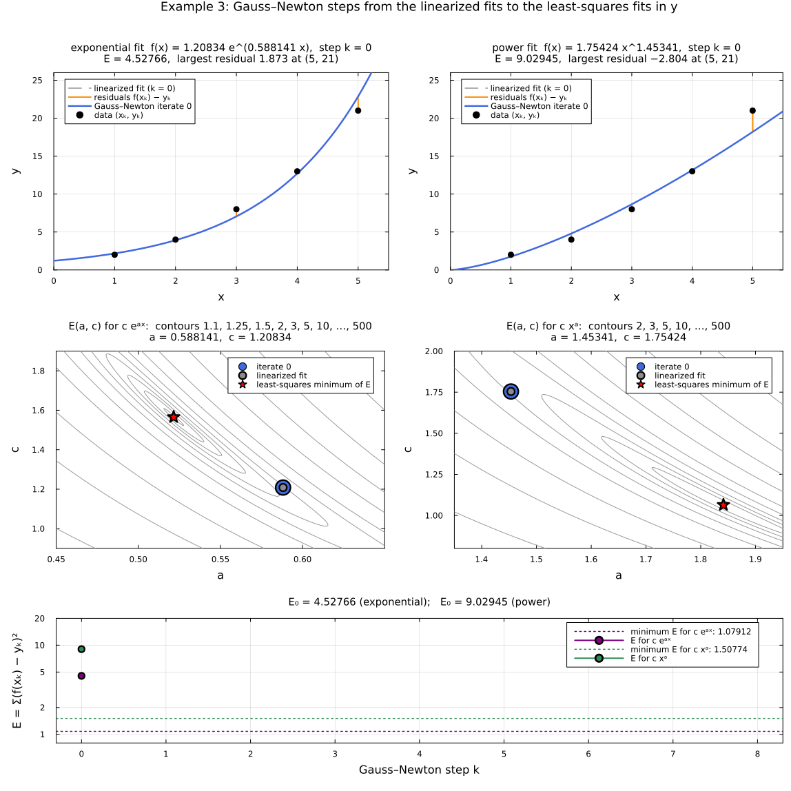

Nonlinear Curve Fitting
Source inspiration: (Mathew 2000-2019).
Description
Many data sets follow a curve rather than a line: a quantity that grows by a fixed factor per unit step, \(y = c\,e^{ax}\), or one that scales like a power of \(x\), \(y = c\,x^{a}\). Given data points \((x_1, y_1), \ldots, (x_n, y_n)\), we want the constants \(a\) and \(c\). Both models are nonlinear in \(a\), so fitting them by least squares directly leads to nonlinear equations for the coefficients.
The data linearization method avoids this. Taking logarithms turns either curve into a straight line \(Y = AX + B\) in new variables: \(X = x\), \(Y = \ln y\) for the exponential, and \(X = \ln x\), \(Y = \ln y\) for the power function. The transformed points \((X_k, Y_k)\) are fitted with the least-squares line, whose coefficients solve the normal equations
\[ \Bigl(\sum_{k=1}^{n} X_k^2\Bigr) A + \Bigl(\sum_{k=1}^{n} X_k\Bigr) B = \sum_{k=1}^{n} X_k Y_k, \qquad \Bigl(\sum_{k=1}^{n} X_k\Bigr) A + n B = \sum_{k=1}^{n} Y_k, \]
and the curve is recovered from \(a = A\) and \(c = e^{B}\). Mathews’ module does this for an exponential fit (Example 1), a power fit (Example 2), and both fits to one data set, choosing the better one by the sum of squared residuals (Example 3). The line is the least-squares fit to the logarithms of the data, so the curve it gives is not, in general, the curve that minimises the squared errors in \(y\) itself; the last section of this page computes those direct fits for comparison. Every fit on this page has been recomputed in 50-digit arithmetic.
Animations
The first two animations show the data linearization method on Examples 1 and 2. Each frame draws a line \(Y = AX + B\) through the centroid \((\bar X, \bar Y)\) of the transformed points, so the second normal equation of (1) holds, and the slope \(A\) sweeps up past the least-squares value and back down to it. The top left panel shows the line and its vertical deviations \(AX_k + B - Y_k\) in the \(XY\)-plane. The top right panel shows the curve that the line maps back to (\(a = A\), \(c = e^{B}\)) and its residuals \(f(x_k) - y_k\) in the \(xy\)-plane. The bottom panel plots \(S(A)\), the sum of the squared deviations in the \(XY\)-plane, against the slope. The two top panels are the two graphs Mathews draws in the solutions of Examples 1 and 2: the least-squares line in the \(XY\)-plane and the curve in the \(xy\)-plane. The third animation goes beyond the module. It starts from the two linearized fits of Example 3 and runs the Gauss–Newton method to the least-squares fits in \(y\) of the last section of this page.
Mathews’ module links no animation, and his animation archive has none for nonlinear curve fitting, so all three animations are new, with no Mathews original. His graphs of all three examples are lost from the archive, so every window here is chosen for this page. Three things in the module are not animated. Example 3’s least-squares lines in the \(XY\)-plane are left out, because Case 3 starts from the curves they give. Part 3(b) of the problem, the discussion of how the fits were made, has no graph. (Mathews’ solution uses the heading 3(b) for the power fit, which this page puts under 3(a) and Case 3 includes.) The direct least-squares fits to the data of Examples 1 and 2, from the last section, are also left out: Case 3 shows the two fits where linearization costs the most in absolute terms, with the linearized \(E\) above the direct minimum by \(3.45\) and \(7.52\) (factors \(4.20\) and \(5.99\)).
Julia source scripts that generated these animations are linked under each case.
Case 1 — Exponential fit of Example 1 by data linearization, \(X = x\), \(Y = \ln y\), slope \(A\) from \(0\) to \(0.8\) and back to \(A = 0.391202\)
Behavior: Every line through the centroid \((2, 1.239772)\) satisfies the second normal equation, so only the slope changes. Along the sweep \(S(A) = S(A^*) + (A - A^*)^2 \sum (X_k - \bar X)^2 = S(A^*) + 10\,(A - A^*)^2\) is a parabola. It falls from \(S = 1.538\) for the horizontal line \(A = 0\) to its minimum \(S = 0.00796547\) at \(A^* = 0.391202\), where the first normal equation holds as well. That line, \(Y = 0.391202\,X + 0.457367\), is the least-squares line, and the animation ends on it. It maps back to the fit of Example 1, \(y = 1.57991\,e^{0.391202x}\), with \(E = \sum (f(x_k) - y_k)^2 = 0.0500688\). For slopes above \(0.5314\) the curve passes above the top of the window before \(x = 4\). There it and its residual are drawn leaving the frame, and the titles keep the true value of \(E\).

Case 2 — Power fit of Example 2 by data linearization, \(X = \ln x\), \(Y = \ln y\), slope \(A\) from \(0.6\) to \(2.2\) and back to \(A = 1.44232\)
Behavior: The data are the ones reconstructed for Example 2 from Mathews’ printed results. The line again turns about the centroid \((0.957498, 1.451995)\), and \(S(A) = S(A^*) + 1.61549\,(A - A^*)^2\). It falls from \(S = 1.149\) at \(A = 0.6\) to its minimum \(S = 0.00262346\) at \(A^* = 1.44232\), where \(B = 0.0709788\). These are Mathews’ printed values, and the line maps back to his fit \(y = 1.07356\,x^{1.44232}\), with \(E = 0.0469525\). The point \((1, 1.1)\) goes to \(X = \ln 1 = 0\), so every curve in the sweep passes through \((1, c)\) with \(c = e^{B}\). For slopes above \(1.821\) the curve passes above the top of the window before \(x = 5\) and is drawn leaving the frame.

Case 3 — Example 3, Gauss–Newton steps \(k = 0, 1, \ldots, 8\) from the linearized fits to the least-squares fits in \(y\)
Behavior: The script runs the plain (undamped) Gauss–Newton method on \(E(c, a) = \sum \bigl(f(x_k) - y_k\bigr)^2\). Each step replaces the residuals \(f(x_k) - y_k\) by their linear approximations in \(c\) and \(a\), and takes the step that solves the resulting linear least-squares problem. Frame \(k = 0\) is part 3(c): the linearized fits have \(E_1 = 4.52766\) and \(E_2 = 9.02945\), and both miss the point \((5, 21)\) by the most, by \(1.873\) and \(-2.804\). For the exponential fit \(E\) falls at every step, to \(1.70801\), \(1.07928\) and then \(1.07912\) to six digits. The first step takes \(a\) from \(0.588141\) past \(a^* = 0.521523\) to \(0.517625\). After that, \(a_k\) lands on alternate sides of \(a^*\), and from step 3 on each error \(a_k - a^*\) is about \(-0.05\) times the one before. For the power fit the first step raises \(E\) from \(9.02945\) to \(11.0572\), because plain Gauss–Newton takes the full step even when it raises \(E\) (a damped variant such as Levenberg–Marquardt would shorten such a step). After that \(E\) falls at every step, to \(1.53457\) and then \(1.50774\). From step 2 on, \(a_k\) approaches \(a^* = 1.84138\) from above, and from step 3 on each error is about \(0.09\) times the one before. This is linear convergence, not the quadratic convergence of Newton’s method; in general Gauss–Newton converges only linearly when the residuals at the minimum are not zero. From step 5 on, both iterates agree to six digits with the direct fits in the table of the last section, \(1.56571\,e^{0.521523x}\) and \(1.06460\,x^{1.84138}\), found there by a different route (a root finder on the reduced equation). Only the step size keeps shrinking, to \(6.98 \times 10^{-10}\) and \(8.15 \times 10^{-9}\) at step 8. The contours show \(E\) as a long, narrow valley in the \((a, c)\)-plane. At the minimum, the eigenvalues of the Hessian of \(E\) differ by factors of about \(1500\) (exponential) and \(280\) (power). The final curves miss \((5, 21)\) by only \(0.2415\) and \(-0.3817\), and their largest residuals are at \((1, 2)\), \(0.6376\) and \(-0.9354\): the reweighting described in the last section.

The Least-Squares Line in the Transformed Variables
Both methods on this page end with the same step: fitting a line \(Y = AX + B\) to points \((X_k, Y_k)\), \(k = 1, \ldots, n\), so that the sum of the squared vertical deviations
\[ \sum_{k=1}^{n} \bigl(A X_k + B - Y_k\bigr)^2 \]
is as small as possible. Setting its partial derivatives with respect to \(A\) and \(B\) to zero gives two linear equations.
\[ \begin{aligned} \Bigl(\sum X_k^2\Bigr) A + \Bigl(\sum X_k\Bigr) B &= \sum X_k Y_k, \\ \Bigl(\sum X_k\Bigr) A + n B &= \sum Y_k, \end{aligned} \tag{1} \]
with all sums over \(k = 1, \ldots, n\). When the \(X_k\) are not all equal, the determinant \(\Delta = n \sum X_k^2 - \bigl(\sum X_k\bigr)^2\) is positive and the solution is
\[ A = \frac{n \sum X_k Y_k - \sum X_k \sum Y_k}{\Delta}, \qquad B = \frac{\sum X_k^2 \sum Y_k - \sum X_k \sum X_k Y_k}{\Delta}. \tag{2} \]
The second equation of (1) says \(B = \bar Y - A \bar X\), where \(\bar X\) and \(\bar Y\) are the means: the line passes through the centroid \((\bar X, \bar Y)\) of the transformed points, and the deviations \(A X_k + B - Y_k\) sum to zero. Both facts give a quick check on every example below. The least-squares lines page derives (1) and treats the line in detail.
Exponential Fit by Data Linearization
Suppose the data are to be fitted by
\[ y = c\,e^{ax}. \tag{3} \]
Taking the natural logarithm of both sides gives \(\ln y = \ln\bigl(c\,e^{ax}\bigr) = \ln c + \ln e^{ax}\), so
\[ \ln y = a x + \ln c . \]
With the change of variables \(X = x\), \(Y = \ln y\) and the constants \(A = a\), \(B = \ln c\), this is the line \(Y = AX + B\).
- Transform the data: \((X_k, Y_k) = (x_k, \ln y_k)\) for \(k = 1, \ldots, n\).
- Fit the least-squares line \(Y = AX + B\) to the points \((X_k, Y_k)\) by solving the normal equations (1).
- Recover the coefficients of the curve: \[ a = A, \qquad c = e^{B}. \tag{4} \]
The exponential fit takes the logarithm of every \(y_k\), so it needs \(y_k > 0\) for all \(k\); the \(x_k\) may be zero or negative. (The caution in Mathews’ solution of Example 1 names the abscissas, but it is the ordinates that are logged in this fit, and Example 1 itself has \(x_1 = 0\).)
Example 1 — Exponential fit to five points
Fit the curve \(y = c\,e^{ax}\) to the data points
\[ (0, 1.5), \quad (1, 2.5), \quad (2, 3.5), \quad (3, 5.0), \quad (4, 7.5). \]
Step 1: Transform the data with \(X_k = x_k\), \(Y_k = \ln y_k\), and form the products needed in (1) (values rounded to six decimals).
| \(k\) | \(x_k\) | \(y_k\) | \(X_k\) | \(Y_k = \ln y_k\) | \(X_k^2\) | \(X_k Y_k\) |
|---|---|---|---|---|---|---|
| 1 | 0 | 1.5 | 0 | 0.405465 | 0 | 0 |
| 2 | 1 | 2.5 | 1 | 0.916291 | 1 | 0.916291 |
| 3 | 2 | 3.5 | 2 | 1.252763 | 4 | 2.505526 |
| 4 | 3 | 5.0 | 3 | 1.609438 | 9 | 4.828314 |
| 5 | 4 | 7.5 | 4 | 2.014903 | 16 | 8.059612 |
| \(\sum\) | 10 | 6.198860 | 30 | 16.309742 |
Step 2: The normal equations (1) are
\[ \begin{aligned} 30 A + 10 B &= 16.309742, \\ 10 A + 5 B &= 6.198860 . \end{aligned} \]
Step 3: Here \(\Delta = 5 \cdot 30 - 10^2 = 50\), and formula (2) gives
\[ A = \frac{5(16.309742) - 10(6.198860)}{50} = \frac{19.560115}{50} = 0.391202, \qquad B = \frac{30(6.198860) - 10(16.309742)}{50} = \frac{22.868367}{50} = 0.457367 . \]
(The numerators are computed from the unrounded sums.)
Step 4: By (4), \(a = A = 0.391202\) and \(c = e^{0.457367} = 1.57991\). The exponential fit is
\[ \boxed{\,y = 1.57991\, e^{0.391202\,x}\,} \]
Verification: substituting the computed \(A\) and \(B\) back into the normal equations:
| Equation | Left-hand side | Right-hand side |
|---|---|---|
| 1 | \(30(0.391202) + 10(0.457367) = 16.309742\) | \(16.309742\) \(\checkmark\) |
| 2 | \(10(0.391202) + 5(0.457367) = 6.198860\) | \(6.198860\) \(\checkmark\) |
(the left-hand sides use the unrounded \(A\) and \(B\)). The line passes through the centroid \((\bar X, \bar Y) = (2, 1.239772)\). The fitted curve and its residuals at the data points are:
| \(k\) | \(x_k\) | \(y_k\) | \(f(x_k) = 1.57991\,e^{0.391202 x_k}\) | \(f(x_k) - y_k\) |
|---|---|---|---|---|
| 1 | 0 | 1.5 | 1.5799 | 0.0799 |
| 2 | 1 | 2.5 | 2.3363 | −0.1637 |
| 3 | 2 | 3.5 | 3.4548 | −0.0452 |
| 4 | 3 | 5.0 | 5.1088 | 0.1088 |
| 5 | 4 | 7.5 | 7.5548 | 0.0548 |
The sum of the squared residuals is \(\sum (f(x_k) - y_k)^2 = 0.0500688\).
Mathews carries out these steps in Mathematica: he stores the points, takes the logarithm of the ordinates, fits the line with Mathematica’s built-in least-squares routine Fit, reads \(A\) and \(B\) off the fitted expression, plots the line in the \(XY\)-plane, and graphs the curve in the \(xy\)-plane.
Power Fit by Data Linearization
Suppose instead the data are to be fitted by the power function
\[ y = c\,x^{a}. \tag{5} \]
Taking logarithms gives \(\ln y = \ln c + \ln x^{a}\), so
\[ \ln y = a \ln x + \ln c . \]
With the change of variables \(X = \ln x\), \(Y = \ln y\) and the constants \(A = a\), \(B = \ln c\), this is again the line \(Y = AX + B\).
- Transform the data: \((X_k, Y_k) = (\ln x_k, \ln y_k)\) for \(k = 1, \ldots, n\).
- Fit the least-squares line \(Y = AX + B\) to the points \((X_k, Y_k)\) by solving the normal equations (1).
- Recover the coefficients of the curve: \[ a = A, \qquad c = e^{B}. \tag{6} \]
The power fit takes the logarithm of every \(x_k\) and every \(y_k\), so it needs \(x_k > 0\) and \(y_k > 0\). A data point with \(x_k = 0\), such as \((0, 1.5)\) in Example 1, cannot be used.
Example 2 — Power fit to five points
Fit the curve \(y = c\,x^{a}\) to the data points
\[ (1, 1.1), \quad (2, 2.8), \quad (3, 5.2), \quad (4, 8.0), \quad (5, 11.1). \]
The image holding the data points of Mathews’ Example 2 is missing from the archive, but his printed results survive: \(B = 0.0709788\), \(a = 1.44232\) and \(c = 1.07356\). With abscissas \(x_k = 1, 2, 3, 4, 5\), a search over every set of ordinates with one decimal place (each within \(3\) of the curve \(1.07356\,x^{1.44232}\)) finds exactly one set that reproduces \(A\) and \(B\) to all of Mathews’ printed digits, the one above; a search in steps of \(0.05\) (each ordinate within \(1\) of the curve) finds the same set and no other. We take these to be Mathews’ data.
Step 1: Transform the data with \(X_k = \ln x_k\), \(Y_k = \ln y_k\) (values rounded to six decimals).
| \(k\) | \(x_k\) | \(y_k\) | \(X_k = \ln x_k\) | \(Y_k = \ln y_k\) | \(X_k^2\) | \(X_k Y_k\) |
|---|---|---|---|---|---|---|
| 1 | 1 | 1.1 | 0 | 0.095310 | 0 | 0 |
| 2 | 2 | 2.8 | 0.693147 | 1.029619 | 0.480453 | 0.713678 |
| 3 | 3 | 5.2 | 1.098612 | 1.648659 | 1.206949 | 1.811237 |
| 4 | 4 | 8.0 | 1.386294 | 2.079442 | 1.921812 | 2.882718 |
| 5 | 5 | 11.1 | 1.609438 | 2.406945 | 2.590290 | 3.873829 |
| \(\sum\) | 4.787492 | 7.259975 | 6.199504 | 9.281461 |
Step 2: The normal equations (1) are
\[ \begin{aligned} 6.199504\, A + 4.787492\, B &= 9.281461, \\ 4.787492\, A + 5 B &= 7.259975 . \end{aligned} \]
Step 3: Here \(\Delta = 5(6.199504) - 4.787492^2 = 8.077445\), and formula (2) gives
\[ A = \frac{11.650236}{8.077445} = 1.44232, \qquad B = \frac{0.573327}{8.077445} = 0.0709788, \]
with the numerators computed from the unrounded sums.
Step 4: By (6), \(a = A = 1.44232\) and \(c = e^{0.0709788} = 1.07356\). The power fit is
\[ \boxed{\,y = 1.07356\, x^{1.44232}\,} \]
These are Mathews’ printed values, which is how the data were recovered.
Verification:
| Equation | Left-hand side | Right-hand side |
|---|---|---|
| 1 | \(6.199504(1.44232) + 4.787492(0.0709788) = 9.281461\) | \(9.281461\) \(\checkmark\) |
| 2 | \(4.787492(1.44232) + 5(0.0709788) = 7.259975\) | \(7.259975\) \(\checkmark\) |
(again with the unrounded \(A\) and \(B\)). The line passes through the centroid \((\bar X, \bar Y) = (0.957498, 1.451995)\). The fitted curve and its residuals:
| \(k\) | \(x_k\) | \(y_k\) | \(f(x_k) = 1.07356\,x_k^{1.44232}\) | \(f(x_k) - y_k\) |
|---|---|---|---|---|
| 1 | 1 | 1.1 | 1.0736 | −0.0264 |
| 2 | 2 | 2.8 | 2.9175 | 0.1175 |
| 3 | 3 | 5.2 | 5.2358 | 0.0358 |
| 4 | 4 | 8.0 | 7.9284 | −0.0716 |
| 5 | 5 | 11.1 | 10.9386 | −0.1614 |
The sum of the squared residuals is \(\sum (f(x_k) - y_k)^2 = 0.0469525\).
Example 3 — Choosing Between an Exponential and a Power Fit
A scientist often has to decide which formula fits a set of data best. Mathews poses three parts for the data points
\[ (1, 2), \quad (2, 4), \quad (3, 8), \quad (4, 13), \quad (5, 21). \]
(a) Find both the exponential fit \(y = c\,e^{ax}\) and the power fit \(y = c\,x^{a}\). (b) Describe how this was done and which transformations were used. (c) Decide which curve fits the data best.
3(a) — The exponential fit
The transformation is \(X_k = x_k\), \(Y_k = \ln y_k\):
| \(k\) | \(x_k\) | \(y_k\) | \(X_k\) | \(Y_k = \ln y_k\) | \(X_k^2\) | \(X_k Y_k\) |
|---|---|---|---|---|---|---|
| 1 | 1 | 2 | 1 | 0.693147 | 1 | 0.693147 |
| 2 | 2 | 4 | 2 | 1.386294 | 4 | 2.772589 |
| 3 | 3 | 8 | 3 | 2.079442 | 9 | 6.238325 |
| 4 | 4 | 13 | 4 | 2.564949 | 16 | 10.259797 |
| 5 | 5 | 21 | 5 | 3.044522 | 25 | 15.222612 |
| \(\sum\) | 15 | 9.768355 | 55 | 35.186470 |
The normal equations are
\[ \begin{aligned} 55 A + 15 B &= 35.186470, \\ 15 A + 5 B &= 9.768355, \end{aligned} \]
with \(\Delta = 5 \cdot 55 - 15^2 = 50\), so \(A = 29.407028/50 = 0.588141\) and \(B = 9.462466/50 = 0.189249\). Then \(a = 0.588141\), \(c = e^{0.189249} = 1.20834\), and
\[ \boxed{\,f_1(x) = 1.20834\, e^{0.588141\,x}\,} \]
Substituting back: \(55(0.588141) + 15(0.189249) = 35.186470\) and \(15(0.588141) + 5(0.189249) = 9.768355\) (with the unrounded \(A\), \(B\)) \(\checkmark\).
3(a) — The power fit
The transformation is \(X_k = \ln x_k\), \(Y_k = \ln y_k\). The \(X_k\) are those of Example 2 and the \(Y_k\) those of the exponential fit just above:
| \(k\) | \(x_k\) | \(y_k\) | \(X_k = \ln x_k\) | \(Y_k = \ln y_k\) | \(X_k^2\) | \(X_k Y_k\) |
|---|---|---|---|---|---|---|
| 1 | 1 | 2 | 0 | 0.693147 | 0 | 0 |
| 2 | 2 | 4 | 0.693147 | 1.386294 | 0.480453 | 0.960906 |
| 3 | 3 | 8 | 1.098612 | 2.079442 | 1.206949 | 2.284500 |
| 4 | 4 | 13 | 1.386294 | 2.564949 | 1.921812 | 3.555775 |
| 5 | 5 | 21 | 1.609438 | 3.044522 | 2.590290 | 4.899970 |
| \(\sum\) | 4.787492 | 9.768355 | 6.199504 | 11.701151 |
The normal equations are
\[ \begin{aligned} 6.199504\, A + 4.787492\, B &= 11.701151, \\ 4.787492\, A + 5 B &= 9.768355, \end{aligned} \]
with \(\Delta = 8.077445\) as in Example 2, so \(A = 11.739835/8.077445 = 1.45341\) and \(B = 4.539797/8.077445 = 0.562034\). Then \(a = 1.45341\), \(c = e^{0.562034} = 1.75424\), and
\[ \boxed{\,f_2(x) = 1.75424\, x^{1.45341}\,} \]
Substituting back: \(6.199504(1.45341) + 4.787492(0.562034) = 11.701151\) and \(4.787492(1.45341) + 5(0.562034) = 9.768355\) (with the unrounded \(A\), \(B\)) \(\checkmark\).
3(b) — How it was done
Neither curve can be fitted by a linear least-squares problem as it stands, because \(a\) enters nonlinearly. Taking logarithms turns each into a straight line:
| Fit | Curve | \(X\) | \(Y\) | Line | Back-transformation |
|---|---|---|---|---|---|
| exponential | \(y = c\,e^{ax}\) | \(x\) | \(\ln y\) | \(Y = AX + B\) | \(a = A\), \(c = e^{B}\) |
| power | \(y = c\,x^{a}\) | \(\ln x\) | \(\ln y\) | \(Y = AX + B\) | \(a = A\), \(c = e^{B}\) |
In each case the least-squares line through the transformed points is found from the normal equations (1), and its slope and intercept are converted back into \(a\) and \(c\). All the data here have \(x_k > 0\) and \(y_k > 0\), so both transformations apply.
3(c) — Which curve fits better?
Mathews compares the sums of the squares of the residuals of the two curves; computed in the original variables they are
\[ E_1 = \sum_{k=1}^{5} \bigl(f_1(x_k) - y_k\bigr)^2, \qquad E_2 = \sum_{k=1}^{5} \bigl(f_2(x_k) - y_k\bigr)^2 . \]
| \(k\) | \(x_k\) | \(y_k\) | \(f_1(x_k)\) | \(f_1(x_k) - y_k\) | \(f_2(x_k)\) | \(f_2(x_k) - y_k\) |
|---|---|---|---|---|---|---|
| 1 | 1 | 2 | 2.1758 | 0.1758 | 1.7542 | −0.2458 |
| 2 | 2 | 4 | 3.9178 | −0.0822 | 4.8041 | 0.8041 |
| 3 | 3 | 8 | 7.0545 | −0.9455 | 8.6605 | 0.6605 |
| 4 | 4 | 13 | 12.7027 | −0.2973 | 13.1561 | 0.1561 |
| 5 | 5 | 21 | 22.8729 | 1.8729 | 18.1961 | −2.8039 |
\[ E_1 = 4.52766, \qquad E_2 = 9.02945 . \]
Since \(E_1 < E_2\), the exponential fit \(f_1(x) = 1.20834\,e^{0.588141\,x}\) is the better of the two. The same ranking holds for the sums of squared deviations of the lines in the \(XY\)-plane, \(0.0311798\) for the exponential fit against \(0.0777152\) for the power fit.
Linearization Is Not Least Squares in \(y\)
This section is not part of Mathews’ module; it shows what the data linearization method gives up. The least-squares fit of \(y = c\,e^{ax}\) in the original variables minimises
\[ E(a, c) = \sum_{k=1}^{n} \bigl(c\,e^{a x_k} - y_k\bigr)^2 . \]
Setting \(\partial E/\partial c = 0\) and \(\partial E/\partial a = 0\) (and dividing the second by \(2c\), for \(c \neq 0\)) gives the nonlinear normal equations
\[ c \sum_{k=1}^{n} e^{2 a x_k} = \sum_{k=1}^{n} y_k\, e^{a x_k}, \qquad \sum_{k=1}^{n} \bigl(c\,e^{a x_k} - y_k\bigr)\, x_k\, e^{a x_k} = 0 . \tag{7} \]
The first equation gives \(c\) in terms of \(a\), and substituting it into the second leaves one equation in \(a\), to be solved by a root finder such as the Newton-Raphson method, with the linearized fit as a natural starting guess. For the power function, replace \(e^{a x_k}\) by \(x_k^{a}\) and the factor \(x_k\) in the second equation by \(\ln x_k\). Solving these equations for the four fits above gives:
| Data | Model | Linearized fit | \(E\) | Direct least-squares fit | \(E\) |
|---|---|---|---|---|---|
| Example 1 | \(c\,e^{ax}\) | \(1.57991\,e^{0.391202x}\) | 0.0500688 | \(1.61087\,e^{0.383575x}\) | 0.0408661 |
| Example 2 | \(c\,x^{a}\) | \(1.07356\,x^{1.44232}\) | 0.0469525 | \(1.02217\,x^{1.48217}\) | 0.00974157 |
| Example 3 | \(c\,e^{ax}\) | \(1.20834\,e^{0.588141x}\) | 4.52766 | \(1.56571\,e^{0.521523x}\) | 1.07912 |
| Example 3 | \(c\,x^{a}\) | \(1.75424\,x^{1.45341}\) | 9.02945 | \(1.06460\,x^{1.84138}\) | 1.50774 |
In each case the reduced equation in \(a\) changes sign only once for \(a\) within \(2\) of the direct value \(a^{*}\), the Hessian of \(E\) there is positive definite (so the point is a minimum), and a grid search over \(|a - a^{*}| \le 1\), \(0.01 \le c \le 3c^{*}\) around the direct fit \((a^{*}, c^{*})\) finds no smaller \(E\). The direct fits lower \(E\) by factors of \(1.23\), \(4.82\), \(4.20\) and \(5.99\). In Example 3 the exponential model still beats the power model, \(1.07912\) against \(1.50774\), so the conclusion of part (c) does not depend on how the curves are fitted.
When a residual is small compared with \(y_k\), \(\ln f(x_k) - \ln y_k \approx \bigl(f(x_k) - y_k\bigr)/y_k\), so the linearized fit approximately minimises the sum of squared relative errors. Points with large \(y_k\) count for less, and the fitted curve can miss them by more. In Example 3 the linearized exponential fit has its largest residual, \(1.8729\), at the largest ordinate \(y_5 = 21\); the direct fit misses that point by only \(0.2415\), and its largest residual is \(0.6376\), at \((1, 2)\). The linearized fit is still useful: it is quick, needs only the linear normal equations (1), and is a good starting guess for solving (7).